|
PROLOG Filtry w astronomii... szczęśliwy ten człek, który nie dotarł jeszcze do etapu filtrów, bo potem... to już pozostaje kolekcjonowanie dziesiątek pudełeczek ze szklanymi krążkami, niejednokrotnie za znaczną kwotę :) F I L T R Y - m o j e k o m p i l a c j e W tym dziale będę prezentował moje ciakawe zestawienia standardowych filtrów w niestandardowe układy. -- F550M -- Filtr, który nie zawiera ani OIII, ani Ha, a zakresem leży pomiędzy nimi? Po co komu taki filtr? Istnieje i nazywa się F550M, używają go w HST i wykonują TAKIE obrazowania. Z czego by tu taki poskładać? :) G-Baader zrealizuje nam prawą stronę widma, kończy się dokładnie tam, gdzie trzeba, tuż przed 600nm. Lecz co z lewą stroną? Nadal mamy OIII ! Odpowiedź brzmi: Wratten 15A, on zajmie się lewą stroną, zaczyna się w bezpiecznej odległości od OIII i leci w prawo. Finalnie uzyskujemy (patrz poniżej) semi F550M filter . 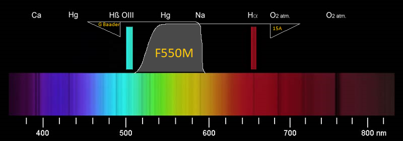 czyli zakresem pracy bardzo zbliżony do oryginalnego filtra HST . 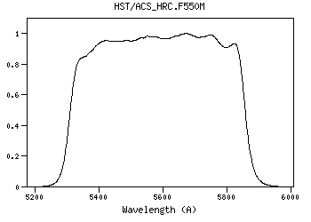 G Baader i Wratten 15A połączone w parę, można wypróbować nowy zestaw. Niestety, Messier 1 w tym zakresie świeci słabo, i spektakularnego zdjęcia niczym HST nie będzie, ale.. coś tam się złapało. Tak powstał testowy Krab w eksperymentalnej palecie R - Ha, G - OIII, B - F550M :) . 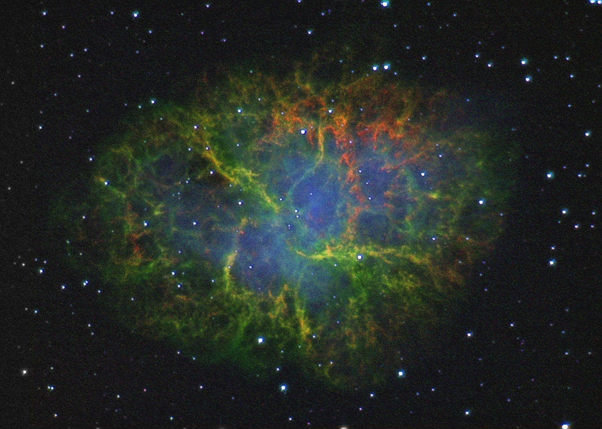 A tak prezentuje się samo F550M . 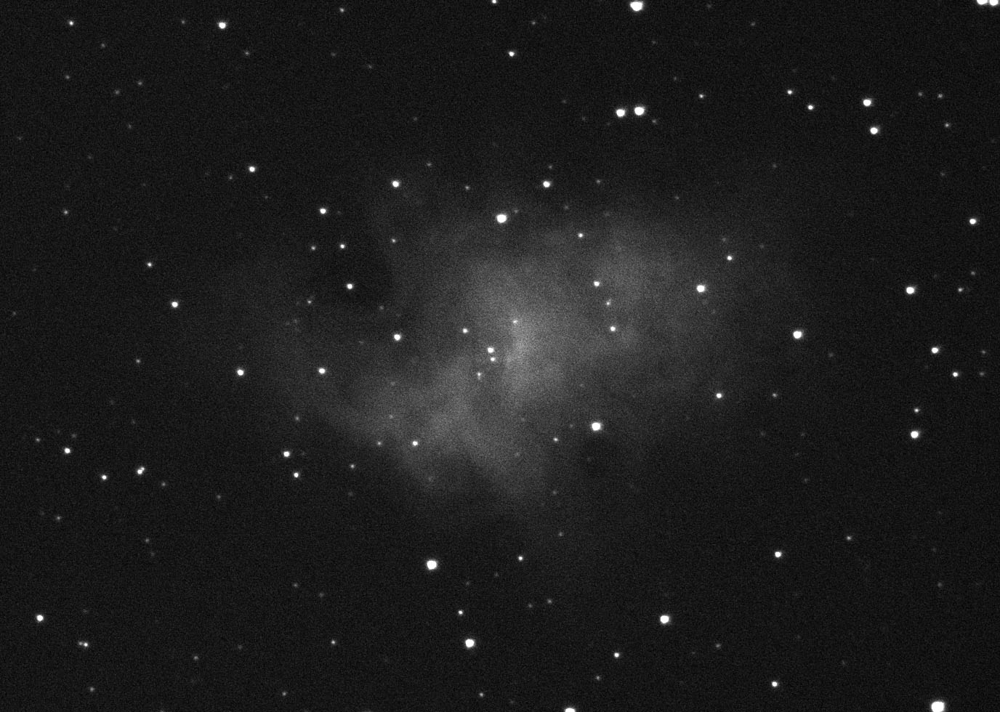 -- H-alpha (Ha) -- Prosty filtr Ha, bez filtra Ha. Da się? Pewnie ! Pasmo wodoru to jedno z najbardziej przydatnych w astrofotografii pasm, aby móc w nim fotografować, należy zakupić specjalny filtr, którego cena niestety oscyluje w granicach 300zł. Tańszą alternatywą dla filtra 7nm jest filtr 35 mn. Niewielu jednak wie, że wystarczy połączyć filtr GSO Dark Red #29 (cena ok 45zł) z filtrem IR cut (cena ok 50 zł) aby spokojnie cieszyć się budżetowym H-alpha ok 30nm. Ważna jest jedynie kwestia doboru odpowiedniego IR cut, gdyż nie może się on zbyt mocno wcinać w czerwień, bo sięgnie nam Ha i je osłabi. Najlepiej ocenić IRcut-y spektroskopem, a jeśli nie posiadamy takiej możliwości bądź umiejętności, można najlepszego wyznaczyć doświadczalnie na jakiejś jasnej mgławicy bogatej w wodór. Najlepszym obiektem do takich testów jest znana i lubiana M27. Zestaw taki nie będzie też posiadał zbyt stromego zbocza odcięcia pasma, jednak będzie ono zupełnie wystarczające w tym przypadku. Ha 35 nm 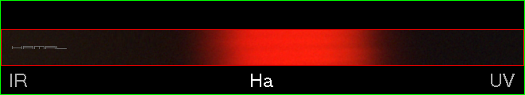 GSO Dark Red #29 + IR cut 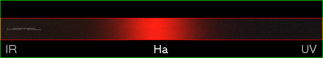 Minimalne przesunięcie całego zakresu widma w podczerwień (w lewo) jest dla nas korzystne, gdyż oddalamy się od LP a zbliżamy do SII która leży w miejscu oznaczonym poniżej. 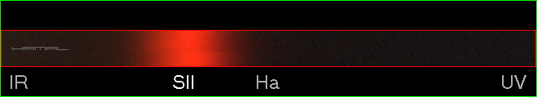 Przykład zastosowania i działania na mgławicy Messier 27 Ha 35 nm 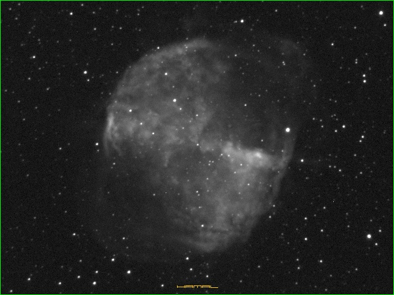 GSO Dark Red #29 + IR cut 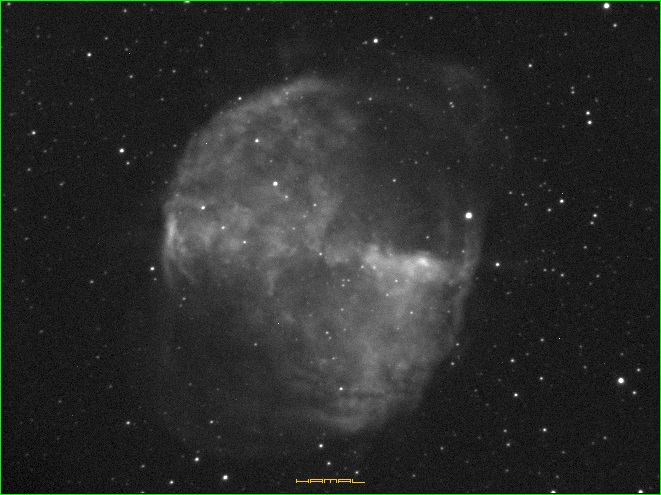 Filtr ten (GSO Dark Red #29) nadaje się także do ulepszenia filtra H-alpha Baader 35 nm gdyż ładnie odetnie nam część widma wchodzącą w LP ale pozostawi nadal zawierającą Ha-NII. Ha 35 nm Ha 35 nm + GSO Dark Red #29 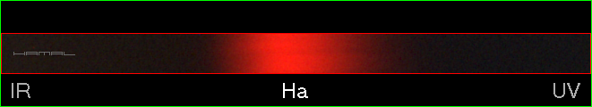 -- S L O A N -- Filtry SLOAN posiadają osobny temat, ale nie wypadało o nich tu nie wspomnieć. Opis znajdziecie TUTAJ F I L T R Y - b a d a n i e W tym dziale będę prezentował moje wyniki badań filtrów za pomocą samodzielnie zbudowanego spektroskopu. -- Baader SII 8nm -- Pasmo siarki - badany filtr to Baader SII 8nm. W czasie prób tego filtra ujawniła się ciekawa anomalia o której milczą oficjalne wykresy producenta, a mianowicie okazało się, że rzeczony filtr przepuszcza wąską wiązkę w okolicach OIII. Krótki czas migawki IR 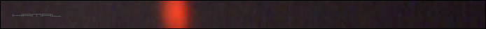 UV Długi czas migawki dla ukazania anomalii IR 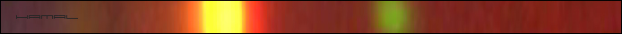 UV Jakiś błąd, stwierdzicie. To niemożliwe. No to, co powiecie na zielone krzewy z filtra SII w kamerze OSC? 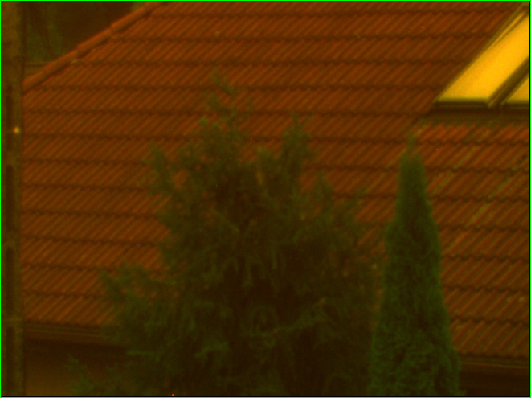 F I L T R Y - L P Neodymium | IDAS LPS-D1 | UHC-S Kamerka Atik Titan color + NGC 7635 = test dla uwidocznienia jak kolor gwiazd i tła nieba zmienia się przy poszczególnych filtrach, oraz dla zaprezentowana pary mojego pomysłu, tj. Neodymium + IDAS LPS-D1 dzięki czemu uzyskujemy pośrednią siłę cięcia LP pomiędzy IDAS-em a UHCS-em. (Balans kolorów nie dotykany - zrzuty z ekanu Artemis Capture, próby dokonane tuż po sobie zapewniły te same waunki dla wszystkich filtrów. Czas klatek 62s.) Neodymium 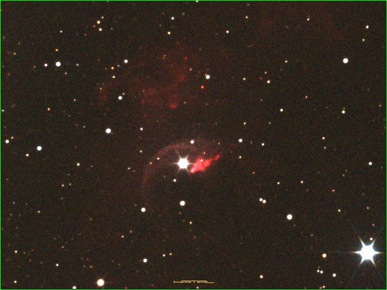 IDAS LPS-D1 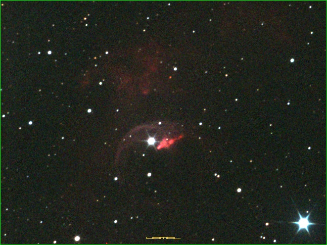 IDAS LPS-D1 + Neodymium 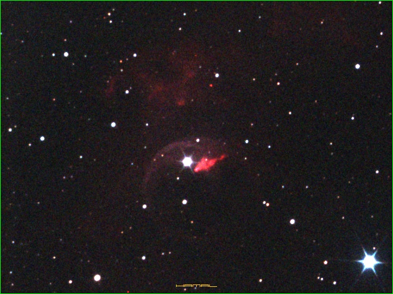 UHC-S 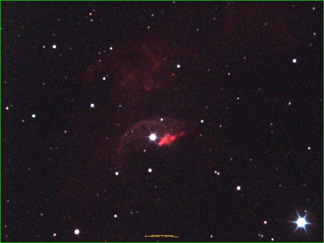 S P E K T R O S K O P Spektroskop, podobnie jak pryzmat, służy do rozszczepienia białego światła słonecznego na składowe w zakresie widzialnego widma (na tęczę). Do tego celu wystarczy zbudować bardzo proste urządzenie składające się z płyty CD. Istnieją różnie wersje tegoż urządzenia, ale ja po ich szczególnie wypróbowaniu gorąco polecam tą wercsję: Spektroskop - Opis budowy. Nie dość, że jest ons najlepsza z proponowanych, nadto, nie wymaga usuwania powłoki odblaskowej z płyty, ani jej cięcia, a cięcie płyty, czy łamanie, nie jest bezpieczną czynnością, z uwagi na jej twardość i sposób w jaki pęka, dając ewentualne drobne, ostre, przeźroczyste odpryski latające w powietrzu. Już takie proste urządzenie, pozwoli Wam dokonać wielu ciekawych obserwacji, oraz zweryfikować deklarowane przez producentów filtrów ich widma, czy takie faktycznie posiadają jakie deklarują, już nie musicie wierzyć im na słowo :) 
|